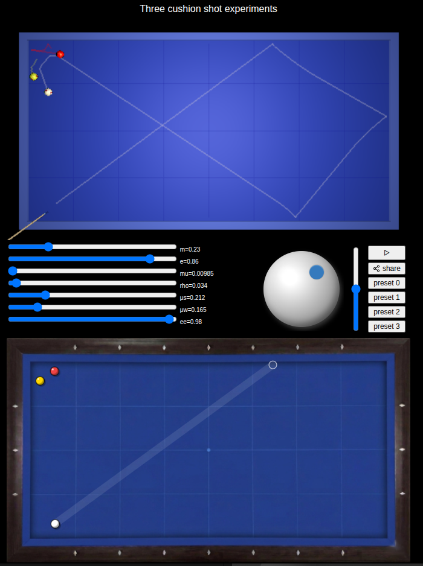

Interactive Billiards Shot Analysis & Training
This interactive shot analysis tool lets you study billiard shots in much more detail than simply drawing a predicted trajectory. Set up a position, choose the shot, and explore how changes in aim, spin, power and elevation affect the result. The simulator can show successful and unsuccessful variations around the original shot, allowing you to see which parts of your technique the shot is most sensitive to.
The key idea: How sensitive is your shot?
Some shots have a large margin for error. A small change in aim or speed still produces a successful result. Other shots are extremely sensitive: a tiny change in the contact point, spin or power sends the cue ball somewhere completely different.
Shot analysis lets you explore this sensitivity interactively. For example, hold the position constant and vary the aim slightly. Then vary the speed. Then experiment with spin or cue elevation. The analysis shows how these changes affect the resulting path and whether the shot still succeeds.
This gives you a practical way to understand what you need to control when playing the shot on a real table.

Explore the shot, not just the answer
The analysis view displays the original shot together with variations around it. Green results indicate successful outcomes and red results indicate misses.
The result is effectively a map of the shot's tolerance: you can see where the playable region is and how quickly the outcome changes as you move away from the ideal shot.
Learn what matters
Aim
See how far you can shift the aiming line before the shot stops working. This can help distinguish a shot that requires extremely precise alignment from one where a small aiming error is acceptable.
Spin
Explore how changing side, follow or draw affects the resulting path. Rather than memorising a single setting, experiment with the range of spin that produces a useful result.
Power
Test how sensitive a position is to speed. Some shots depend on arriving at a particular point with the correct speed, while others remain successful over a much wider range.
Elevation
Investigate how changes in cue elevation affect the trajectory and outcome, particularly for shots where elevation is an important part of the technique.
Turn practice into something you can study
The simulator can be used as a laboratory for your own billiards. Find an interesting position from a game, recreate it, and investigate it. Try different approaches. Find the range of aim, spin and power that works. Then save the result as a diagram you can return to later.
Instead of simply being told "use this shot", you can investigate why it works and what happens when you get it slightly wrong.
Create diagrams for teaching and sharing
Shot positions can also be turned into diagrams for your own notes, training material or billiards articles. Generate SVG diagrams from analysed positions, making it possible to print them, include them in documents, or use them when writing about billiards techniques and systems.
This makes the simulator useful not only for practising shots, but also for creating and communicating billiards knowledge — expanding its audience to teachers, bloggers, forum users, and researchers.
From the table to your training notes
A useful training position doesn't have to disappear after you play it. Analyse a shot, record what you discovered, and use the resulting diagram as a reference for future practice. You can build your own collection of positions and experiments — including difficult shots from real games, system experiments and shots you want to understand better.
The goal is not to replace practice on a real table. It is to make the time between practice sessions more useful by giving you a way to experiment, visualise and reason about shots.
For players who want to go deeper
The simulator is based on a physics model of billiard balls, cushions, friction and spin. That makes it possible to investigate questions that are difficult to answer with a static diagram alone:
- How much does the path change if the speed is reduced?
- How much side spin can be removed before the shot no longer reaches the target?
- How accurate does the aim need to be?
- Which parameter is actually responsible for the difficult part of the shot?
Experiment with the shot and find out.
Training is more than making the shot
A good training tool should help you understand what to practise. A shot with a narrow tolerance tells you that precision matters. A shot with a wide tolerance tells you that you may be able to concentrate on another part of your technique.
Combined with the site's shot exams and practice modes, shot analysis provides a coherent way to move from playing a shot → analysing it → practising it → testing yourself on it.